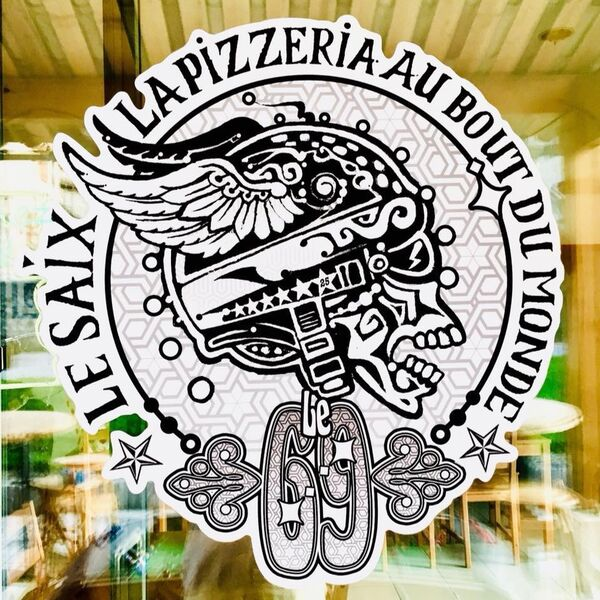
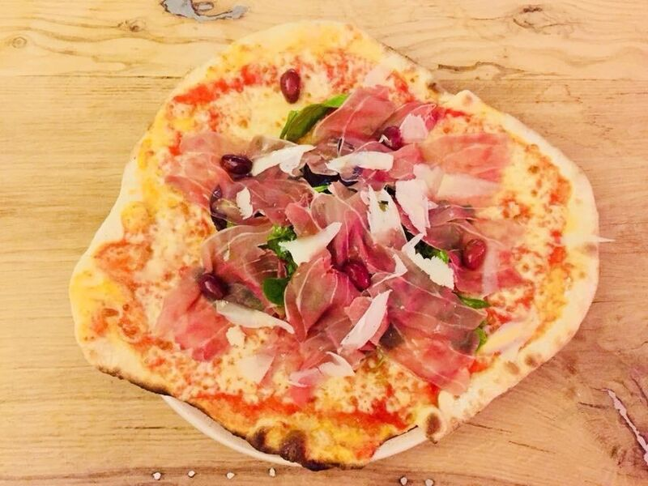
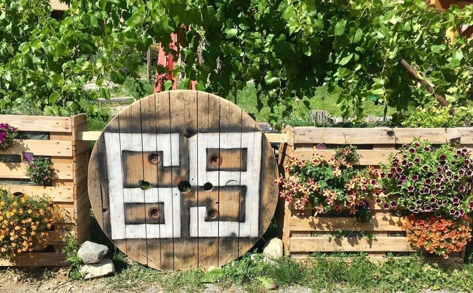
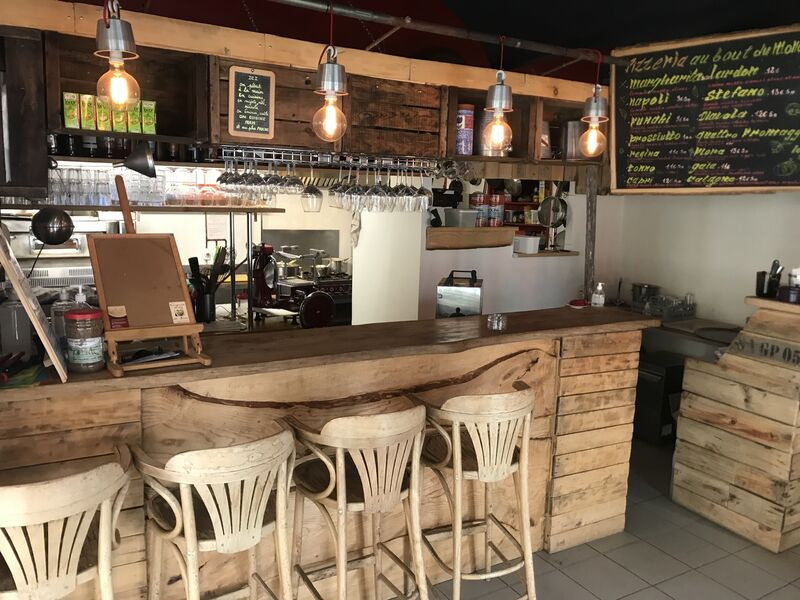

Pizzas maison
Le vendredi et le samedi soir, préparées sur place et disponibles à emporter.
La signature du 69Le Saix · Hautes-Alpes · Depuis l’autre siècle


Une halte vivante,
au calme du Saix.
Ici, le bout du monde
est une destination.
Dans le village du Saix, Le 69 cultive une ambiance libre, joyeuse et un peu hors du temps. On s’installe à l’ombre, on partage une pizza maison, on prolonge autour d’un verre. Les produits sont choisis frais, bio et/ou locaux selon les propositions du moment.


03 / LE RITUEL
Un rendez-vous convivial annoncé chaque premier samedi du mois. La programmation et les horaires pouvant varier, pensez à réserver.
Appeler le 06 30 80 59 63 ↗04 / VENIR
Les jours évoluent selon la saison. Appelez avant votre venue.
Pizza, soleil,
et puis voilà.